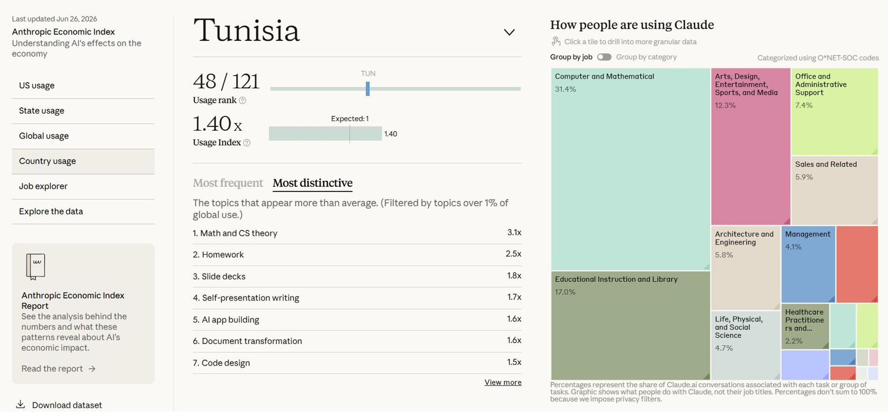
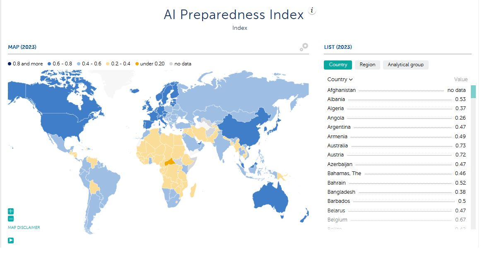

AI Adoption & Policy
Tunisia leads North Africa in AI use, Anthropic data shows
Tunisia uses AI more intensively than almost any economy in its region. Without a state willing to back that head start, it will be exported along with the talent.
In brief
- Tunisia ranks 48th of 121 countries on the Anthropic AI Usage Index, using AI about 40% more intensively than its economy would predict, first in North Africa.
- Nearly a third of that usage is computer and mathematical work, yet the IMF's AI Preparedness Index scores Tunisia at just 0.47, well behind the economies capturing AI's gains.
- The opportunity is real and already proven, but weak capital rules and unfunded strategy risk exporting the talent instead of the value it creates.
01A quiet signal in the data
Something unusual is happening in Tunisia, and the government appears not to have noticed.
New data from Anthropic, the American company behind the Claude AI models, ranks countries by how much they use the technology relative to the size of their working-age population. Tunisia scores 1.40, which means Tunisians use AI about 40% more than an economy of its size should. It ranks 48th of 121 countries, first in North Africa, ahead of Morocco, Algeria and Egypt. A middle-income country whose economy grew just 2.5 percent last year is using AI at the intensity of nations several times richer.
More interestingly, Claude usage data shows that nearly a third of Tunisia's AI activity is computer and mathematical work. Another 17% is education. The topics Tunisians turn to far more than the global average are coding, mathematics and computer-science theory. This is not a country using chatbots to write birthday messages. It is a country writing software, studying and building.

02Readiness lags behind appetite
The appetite runs ahead of the institutions meant to support it. On the IMF's AI Preparedness Index, which scores digital infrastructure, human capital and regulation, Tunisia sits at 0.47. That is ahead of Algeria and respectable for the region, but a long way behind the countries actually capturing AI's gains. The demand is entirely bottom-up, leaving national readiness halfway realized while the state remains largely absent.

03What Tunisia has going for it
This matters because AI is one of the few levers a small economy like Tunisia's can actually pull. The country has what the moment rewards: a large pool of francophone engineers, strong mathematical training, cheap proximity to a European market short of AI-capable talent, and a population already fluent in the tools. The opportunity here is tangible, transitioning Tunisia's established tech-offshoring model up the value chain from basic execution to building sophisticated AI systems, while absorbing a portion of the 30 percent of university graduates currently facing structural unemployment.
Tunisia has already proved it can do this. InstaDeep, founded in Tunis in 2014 by two Tunisians, became one of the world's most respected applied-AI firms and was bought by Germany's BioNTech in 2023 for 682 million dollars, the largest technology acquisition in Africa's history. But while the company's engineers remained in Tunis, its corporate value largely evaporated from the local economy. InstaDeep incorporated in the United Kingdom, raised its capital abroad, and delivered its ultimate financial windfall to a German buyer. This single story encapsulates the broader structural challenge: Tunisia cultivates the talent, but foreign markets harvest the value.
04Vision without mechanism
This dynamic is not due to a lack of official vision. Tunisia enacted a pioneering Startup Act in 2018 and has drafted multiple national AI frameworks, including a strategy spanning 2026 to 2030. On paper, the ambition is clear; in practice, these documents function more like press announcements than operational strategy, lacking substantial public funding, concrete mechanisms to keep founders onshore, or a regulatory environment that supports domestic scaling.
The cost of this drift is substantial. Every month without actionable policy, Tunisia's most capable young engineers hone their skills, only to be hired by foreign firms. On this trajectory, the impressive Anthropic usage figures cease to be a triumph; they become a metric of how much free, highly trained talent Tunisia is exporting to Europe.
05Closing the departure gates
Reversing this trend does not require a mystery solution, but it does demand political will. Local founders and tech advocates argue that the 2026 strategy must be backed by a national AI fund designed specifically to keep startups, and their tax bases, at home. Crucially, the state must reform the rigid currency and capital regulations that forced companies like InstaDeep offshore in the first place.
The government could also act as a catalyst by becoming a customer. Public procurement of local AI services would create an immediate domestic market, giving startups essential early revenue before they are forced to chase foreign clients. For foreign investors, the nearshore opportunity remains highly underpriced, with Tunisian engineering talent costing a fraction of its European equivalent just one time zone away.
Tunisia currently holds a rare advantage: grass-roots demand and technical fluency have arrived before the policy. Its citizens have already made their choice.
The question now is whether the state will close the departure gates, or simply watch the most promising economic opening in a generation walk through them.
References
- Anthropic (2026). The Anthropic Economic Index, country usage. anthropic.com/economic-index
- International Monetary Fund. AI Preparedness Index, 2023 data. imf.org/external/datamapper/AI_PI@AIPI
- World Bank. Tunisia country data: unemployment, graduate unemployment (30.6%), GDP growth (2.5%). data.worldbank.org/country/tunisia
- Rest of World; TechCabal. Reporting on the InstaDeep / BioNTech acquisition. restofworld.org, techcabal.com
- Tunisia Startup Act (2018); National AI Strategy 2026-2030. regulations.ai